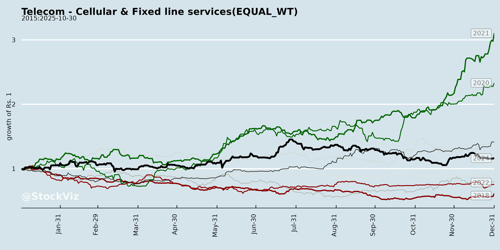
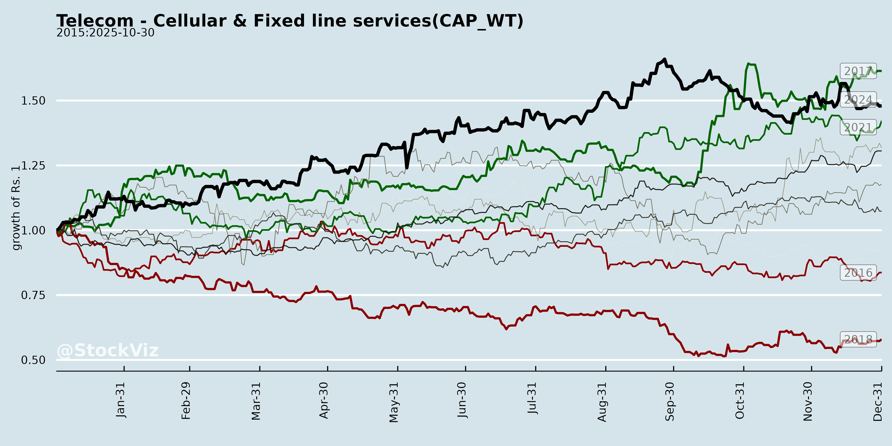
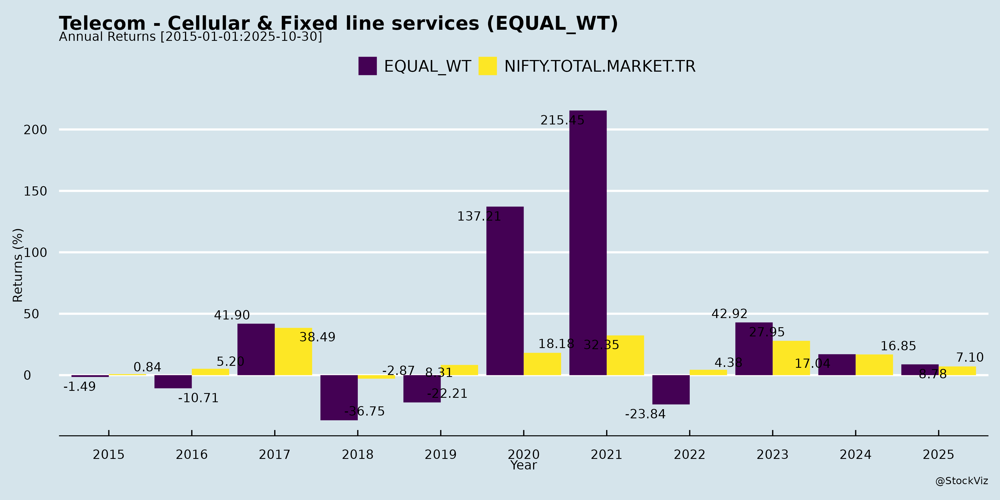
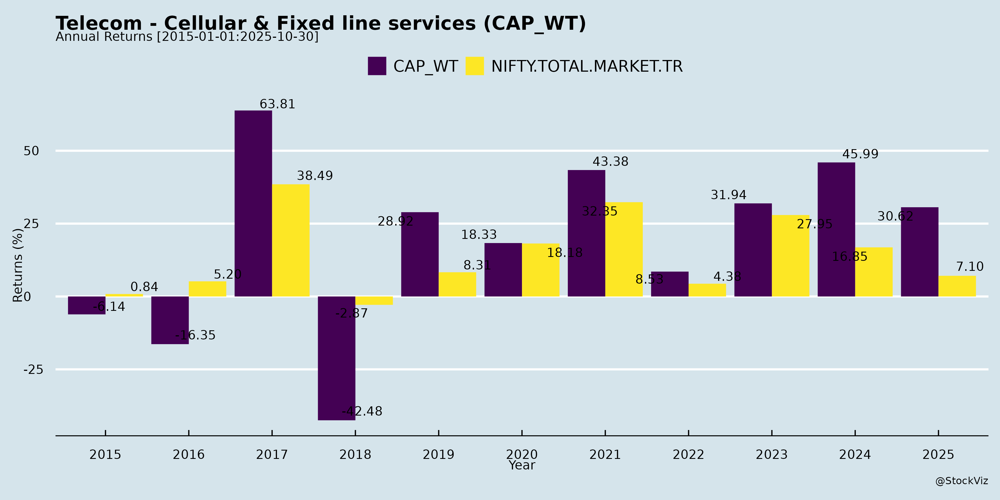
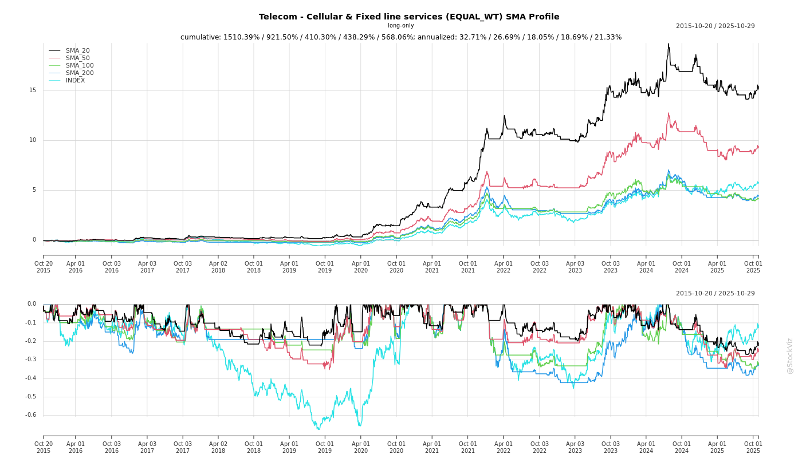
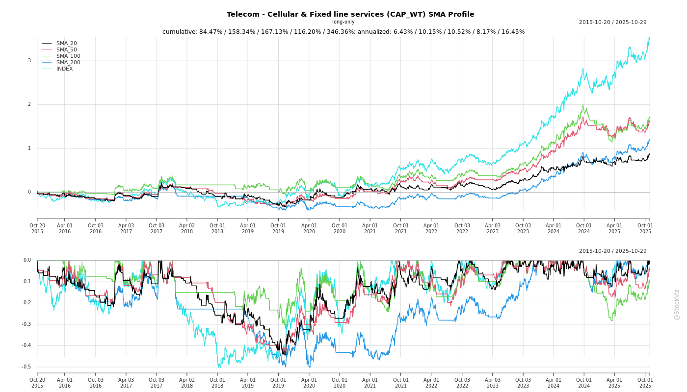
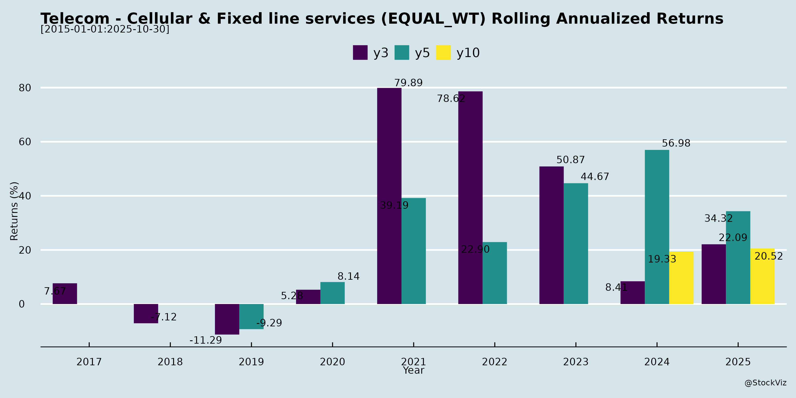
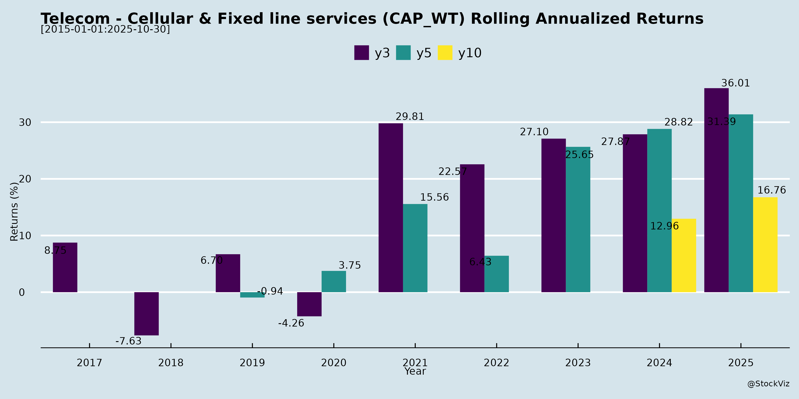

asof: 2025-12-03
Indian Telecom Sector (Cellular & Fixed Line Services) Analysis
Based on provided documents (primarily Vodafone Idea Q2 FY26 Earnings Transcript, supplemented by investor meeting disclosures from Bharti Airtel, Bharti Hexacom, and Tata Communications), the analysis focuses on cellular (wireless/mobile) and fixed-line/enterprise services. Vodafone Idea (Vi) provides the most granular insights into market dynamics, while others signal ongoing investor engagement amid network expansions and funding needs. Dates are futuristic (2025), but trends reflect current/persistent sector themes.
Tailwinds
Headwinds
Growth Prospects
Key Risks
Summary: Indian telecom enjoys strong tailwinds from digital demand and investments (e.g., Vi’s 5G/4G progress, ARPU gains), positioning for 5G/enterprise-led growth. However, headwinds like Vi’s debt/churn and capex funding loom large, with risks centered on regulatory relief and execution. Sector resilience hinges on 3-player viability (govt-backed) and tariff hikes; investor meets signal optimism but underscore funding focus. Overall, moderate growth (low-teens revenue CAGR) with high risk-reward for laggards like Vi vs leaders (Airtel).
asof: 2025-12-01
Using the provided documents from Vodafone Idea (IDEA), Bharti Hexacom (BHARTIHEXA), Tata Communications (TATACOMM), and Tata Teleservices Maharashtra (TTML) as primary inputs, this analysis focuses on the cellular (mobile voice/data) and fixed line services sub-sectors. These filings cover Q3/Nine Months FY25 (ended Dec 2024) results, clarifications, auditor reports, and disclosures. The sector shows polarization: strong performers (Bharti Hexacom, Tata Comm) drive growth via data/5G/digital, while laggards (Vi, TTML) grapple with legacy debt/AGR issues. Overall revenue growth is data-led, but profitability is uneven.
| Risk Category | Description | Impacted Cos. | Mitigation |
|---|---|---|---|
| Regulatory/Litigation | AGR/DoT demands (₹7-8K Cr contingent); tariff caps. | All (esp. TTML, Tata Comm, Vi) | Legal stays (TDSAT/SC pending); defenses filed. |
| Debt Sustainability | Negative coverage (TTML 0.8x); CP maturities (Bharti/TTML). | TTML, Vi | Parent infusions; asset sales. |
| Competition | Jio/Airtel dominance erodes Vi/TTML share. | Vi, TTML | Data pivot; 5G differentiation. |
| Execution | 5G ROI delays; forex (Tata Comm subs). | Bharti, Tata Comm | Strong balance sheets (Bharti networth ₹53 Bn). |
| Macro | Capex cycle, inflation on ops costs. | All | Data demand buffers. |
| Going Concern | TTML’s losses/negative equity. | TTML | Tata Group support letter. |
High Risk: Weak players (Vi/TTML) face delisting/insolvency; Medium Risk: Litigation resolution; Low Risk: Leaders (Bharti/Tata Comm) well-positioned.
The Indian telecom sector (cellular/fixed line) is resilient yet bifurcated—leaders like Bharti Hexacom (23% 9M revenue growth, 16% NPM) and Tata Comm (data/digital +6-10% YoY) ride tailwinds of 5G/data surge, margin gains, and restructuring for high growth prospects (15%+ CAGR via ARPU/digital). However, headwinds from AGR/debt plague laggards (TTML ₹969 Cr loss; Vi implied distress), with key risks in regulation (SC/TDSAT outcomes) and liquidity. Net Positive Outlook: Data/5G tailwinds outweigh issues for top players (70% market share); consolidation could stabilize sector. FY25 growth ~10-12% revenue, but profitability hinges on debt resolution. Investors favor Bharti/Tata Comm; avoid Vi/TTML without catalysts.
Data sourced exclusively from filings; sector inferences based on disclosed metrics.
asof: 2025-11-29
Summary Analysis: Indian Telecom Sector (Cellular & Fixed Line Services)
The provided disclosures from key players (Bharti Airtel, Vodafone Idea, Bharti Hexacom, Tata Communications, Tata Teleservices Maharashtra Ltd. (TTML), MTNL, and Reliance Communications (RCOM)) highlight a mixed outlook for the Indian telecom sector. The industry faces persistent regulatory and financial headwinds but shows tailwinds in digital infrastructure and sustainability. Growth is anchored in data centers and enterprise services, amid elevated risks from debt, compliance, and legal actions. Below is a structured analysis:
Headwinds (Challenges Constraining Performance)
Tailwinds (Supportive Factors)
Growth Prospects
Key Risks
| Risk Category | Details | Severity (High/Med/Low) | Mitigation Noted |
|---|---|---|---|
| Regulatory/Legal | AGR/dues (Vi); SEBI fines (MTNL); ED attachment/fraud probes (RCOM: ₹2,929Cr SBI loss). Supreme Court AGR cap to FY17 limits relief. | High | DoT appointments (MTNL); appeals filed. |
| Financial/Liquidity | High debt/NPAs (RCOM outstanding ₹40kCr); devolved LCs/BGs (multiple banks). Negative net worth (TTML). | High | CP issuance (Tata Comm); renewables for cost savings. |
| Operational/Cyber | Data breaches/cyber risks (TTML Principle 2/9); 40k+ complaints; supply chain ESG gaps (48% assessed). | Medium | ISO 27001/22301 certs; BCP/DR; supplier audits. |
| Governance/Fraud | Fund diversion (RCOM: mutual funds/infra siphoning); CIRP asset alienation (Bonn Inc. flat sale). | High | Whistleblower/POSH policies (TTML 100% coverage). |
| Market/Competition | Churn from QoS penalties; 0.52% sales via dealers (TTML). | Medium | Customer NPS surveys; diversity (15% women). |
Overall Outlook: Sector growth (8-12% CAGR) hinges on data/5G tailwinds, but headwinds from debt/regulations cap near-term recovery. Leaders like Airtel/TTML (ESG focus) are better positioned vs. distressed peers (RCOM/MTNL/Vi). Monitor Supreme Court AGR/NCLT RCOM outcomes for pivots. Recommendation: Prioritize debt resolution and digital capex for resilience.
asof: 2025-12-03
Indian Telecom Sector (Cellular & Fixed Line Services) Analysis
Based on the provided documents (Bharti Airtel, Vodafone Idea Q2 FY26 Earnings Transcript, Bharti Hexacom, and Tata Communications announcements dated Nov-Dec 2025). The analysis draws primarily from Vodafone Idea’s (Vi) detailed earnings insights, reflecting a lagging private player amid sector-wide trends. Airtel/Hexacom/TataComm docs highlight investor engagement (e.g., Macquarie conferences), signaling sustained interest but no new operational data. Sector context: ~1.2B wireless subs, 83% tele-density (127% urban, 60% rural), nearing 1B internet subs (44% rural).
Tailwinds (Positive Forces)
Headwinds (Challenges)
Growth Prospects
Key Risks
Summary
Bullish Long-Term Outlook Moderated by Near-Term Execution Risks. Tailwinds from digital India (data/5G growth, ARPU up) and investments (Vi revenue +2.4% YoY to Rs.111.9B) support recovery, with enterprise/digital as key differentiators. Headwinds like sub-losses/churn and funding needs cap momentum—Vi cash EBITDA -3.4% YoY reflects this. Growth hinges on 90% coverage, 5G scale, and AGR relief (enabling Rs.50-55k Cr capex). High Risk of Share Loss if funding delays; tariff hikes critical for sustainability. Sector attractive (high tele-density upside), but Vi (debt-laden) trails Airtel; investor meets underscore scrutiny. Recommendation: Monitor Q3 capex/funding updates; positive if sub-churn inflects by FY26-end.
asof: 2025-12-02
The Indian telecom sector, dominated by cellular (mobile voice/data) and fixed line (broadband/homes) services, shows a bifurcated landscape: robust growth in market leaders (Bharti Airtel, Bharti Hexacom, Tata Communications) driven by data premiumization and digital services, contrasted by severe distress in legacy players (Vodafone Idea, MTNL, RCOM, Tata Teleservices Maharashtra). Key filings highlight Airtel’s dominance (revenue ₹1,016 Bn H1 FY26, up 27% YoY), Hexacom’s regional strength, and Tata Comm’s enterprise focus, while others report mounting losses, insolvency, and regulatory overhangs. Below is a structured summary of headwinds, tailwinds, growth prospects, and key risks.
Projected FY26 Outlook: Leaders (Airtel/Hexacom) 12-15% revenue growth; sector EBITDA margins ~45-50%; distressed recovery via restructuring.
| Risk Category | Description | Impact (from Filings) |
|---|---|---|
| Regulatory/Legal | AGR/DoT demands (₹7K+ Cr for MTNL); spectrum OTC disputes. | High (MTNL contingent liability ₹3.2K Cr; Vi customer going concern). |
| Financial Distress | Debt defaults/NPA (MTNL ₹3K Cr; RCOM CIRP); negative cash flows. | Critical (MTNL adverse audit; Vi 0.48% dissent on CEO). |
| Operational | Revenue erosion via BSNL migration (MTNL); churn (Vi/MTNL 2-3%). | Medium-High (MTNL ops handed over; Airtel notes receivable risks). |
| Competition | Jio/Airtel dominance squeezes Vi/MTNL market share. | High (Vi ARPU lag; MTNL customer surrender). |
| Execution | 5G capex (Airtel ₹223 Bn H1); BSNL SLA delays (MTNL). | Medium (Airtel capex sustainable; MTNL unquantified revenue loss). |
| Going Concern | MTNL/RCOM/TTML viability (insolvency, losses). | Existential (adverse opinions; CIRP ongoing). |
Overall Sector Verdict: Optimistic for Leaders (Airtel/Hexacom/Tata Comm: data tailwinds outweigh risks); High Risk for Laggards (Vi/MTNL/RCOM: revival hinges on govt aid/mergers). Sector poised for data-led growth (~10-12% CAGR), but consolidation essential for viability.
asof: 2025-11-29
Indian Telecom Sector (Cellular & Fixed Line Services) Analysis
Based on provided press releases (Bharti Airtel, Vodafone Idea/Vi, Bharti Hexacom, Tata Communications, Tata Teleservices – all dated 2025). These documents highlight positive developments in network expansions, 5G rollouts, financial growth, and value-added services, reflecting sector momentum amid 5G transition and digital demand.
Tailwinds (Positive Drivers)
Headwinds (Challenges)
Growth Prospects
Key Risks
| Risk Category | Description | Mitigation from Docs |
|---|---|---|
| Execution | Delays in 5G/FTTH rollouts due to terrain, supply chains (e.g., Ladakh, high-altitude sites). | Partnerships (Nokia/Ericsson/Samsung for Vi; asset-light FTTH). |
| Financial | Capex funding amid debt (Vi/Hexacom); price wars eroding margins. | Margin expansion (Hexacom EBITDA +20% YoY); ARPU uplift. |
| Regulatory/Competitive | Spectrum auctions, tariff hikes, Jio/Airtel dominance squeezing Vi/others. | Not directly addressed; focus on differentiation (remote coverage, AI). |
| Macro | Economic slowdown curbing SME/consumer spend; forex volatility for global partnerships. | SME targeting (TTBS ‘Mira’); tourism/digital payments focus. |
| Tech/Operational | Cybersecurity, network reliability in remote areas; 5G device penetration. | AI-SON for efficiency (Vi); 78% smartphone base (Hexacom). |
Summary: The sector enjoys strong tailwinds from 5G acceleration, data demand, and broadband growth, with promising prospects in rural/digital services (10-20% YoY metrics). Headwinds center on capex/debt, but improving financials (e.g., Hexacom) provide buffer. Key risks are execution-heavy, but partnerships and ARPU gains signal resilience. Bullish outlook for leaders like Airtel/Hexacom; Vi catching up via scale. Overall, positions Indian telecom for Digital India leadership.
Copyright © 2023 SAS Data Analytics Pvt. Ltd. All rights reserved.